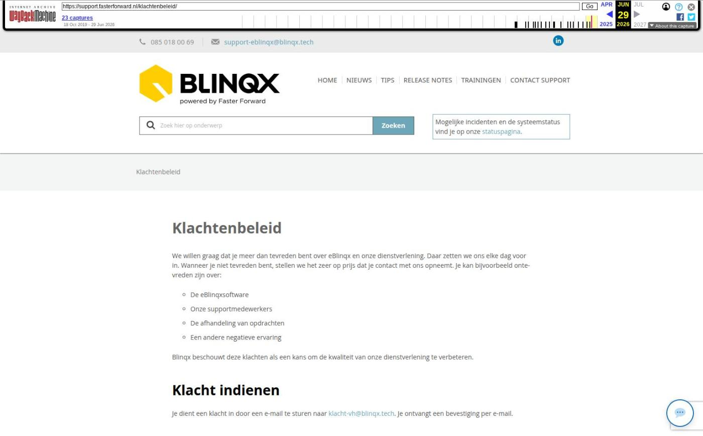

Verbeteringen performance

Tekstinhoud
Op dinsdag 23 juni zijn er verbeteringen doorgevoerd aan de performance van Elements en eBlinqx. Hieronder lees je welke acties zijn afgerond, welke nog lopen en waar we naartoe werken.
Verbeteringen performance
Doorlopende en lopende acties
Afgeronde acties
Koers richting de toekomst
Verbeteringen performance
Er zijn diverse acties doorgevoerd om de performance te verbeteren. Het verbeteren van de performance is een doorlopend project. Diverse acties zijn afgerond, waarbij andere acties lopend of doorlopend zijn. Daarnaast hebben we pijlers gezet voor de toekomst.
Doorlopende en lopende acties
Het tonen van ingeladen pagina's is versneld: door het toevoegen en optimaliseren van database-indexen en het herschrijven van databasequery's worden sommige pagina's sneller ingeladen. Hierop blijven we verbeteringen doorvoeren.
Binnen het team hebben we capaciteit vrijgemaakt, zodat 2 personen zich volledig kunnen richten op de verbetering van de performance.
We werken intensief samen met onze hostingpartij. We werken samen aan structurele oplossingen voor een stabieler en meer schaalbaar platform.
Functionaliteiten en bijbehorende processen, zoals automatisch censureren, worden geoptimaliseerd
Machines worden gemonitord, waarbij wordt gekeken of deze vergroot moeten worden
We onderzoeken of we kunnen overstappen van HTTP/1 naar HTTP/2, wat snelheidswinst oplevert.
Afgeronde acties
Er is een nieuwe jobserver toegevoegd. Achtergrondprocessen, zoals e-mailverwerking en het verwerken van HDN-berichten, worden nu tijdig en zonder vertraging afgehandeld.
Er zijn twee database servers toegevoegd. Hierdoor ontstaat er meer ruimte op de servers wat de performance ten goede komt.
De browsers laden eBlinqx sneller in vanwege verbeteringen in de front-end van de software
Het achterliggende proces rondom maandafsluiting en jaarafsluiting is uitvoerig onderzocht. Dit proces is herschreven en geoptimaliseerd, waardoor dit sneller wordt verwerkt.
Het proces wat draait bij het opzeggen van een gebruiker is geoptimaliseerd, zodat deze niet meer verstorend werkt voor de performance.
Koers richting de toekomst
Naast bovenstaande (door)lopende en afgeronde acties volgen we ook een koers richting de toekomst. Hierbij hebben we de volgende pijlers gezet:
Modernisering infrastructuur en applicatie: wij werken aan een vernieuwde technische basis, zodat updates en verbeteringen automatisch bijdragen aan snelheid en stabiliteit.
Database-expertise structureel binnen Blinqx: wij onderzoeken of wij database-expertise vast kunnen beleggen, zodat wij nu én in de toekomst snel kunnen schakelen op performance- en schaalbaarheidsvraagstukken.
Opschonen codebase: onderdelen die niet meer actief gebruikt worden, worden verwijderd. Dit verlaagt de onderhoudslast en houdt de applicatie wendbaar.
Vernieuwd release-proces: wij gaan toe naar een meer geautomatiseerd release-proces met uitgebreidere geautomatiseerde tests. Dit verlaagt het risico op fouten in productie en verkort de doorlooptijd van verbeteringen.
Toekomstvast voor AI-ondersteund ontwikkelen: meer standaardisering in onze opzet, zodat ontwikkeling met AI-tooling schaalbaar en betrouwbaar verloopt.
Geplaatst op 19 juni 2026 (Laatste update: 22 juni 2026)
Laatste 5 releasenotes
Verbeteringen performance »
Voorbereidingen op HDN 26 en verbeteringen PortefeuilleSignalen »
Nog meer data en documenten vergelijken »
Gemakkelijk data en documenten vergelijken »
Verbeteringen boekhouding en facturatie »